舉辦期間限定活動「來向鎌倉道別吧(いざ鎌倉にさよならを) ～Little Big Tengu～」！
緊追靈基發生異常的牛若丸，御主向特異點靈子轉移。
為了確認事情的真相，開始巡迴各地特異點的冒險。
本活動中進行主線關卡的話，活動限定從者「★4(SR)鬼一法眼」會以期間限定暫時加入。
更加推進主線關卡，讓「★4(SR)鬼一法眼」正式加入吧！
※本頁面皆為開發中圖片。會有與實際圖片相異的情況。 ※一部份的關卡為日後開放。
◆活動舉辦期間◆
2021年1月20日(三) 17:00～2月3日(三) 11:59
◆活動參加條件◆
滿足以下條件的御主才能參加
・通過「特異點F 炎上汙染都市 冬木」
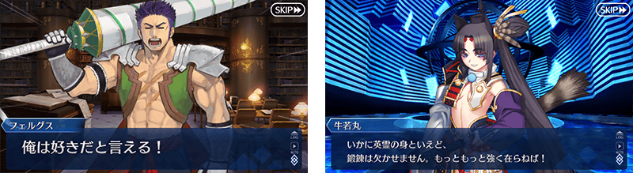
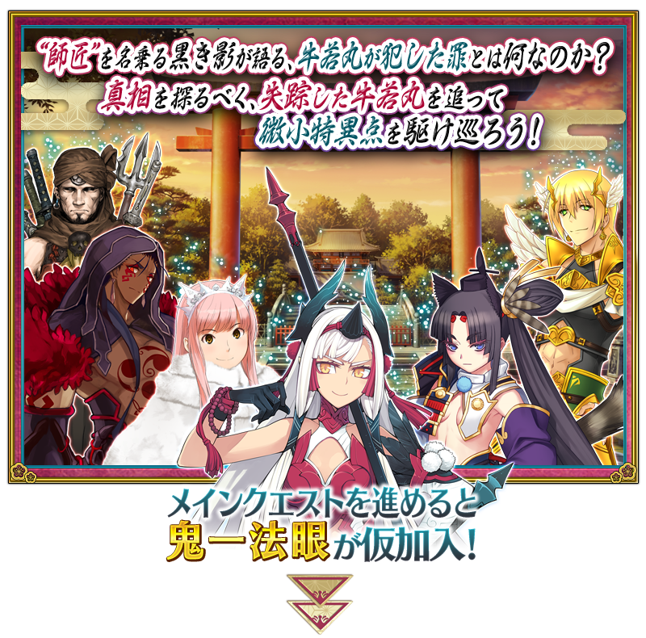
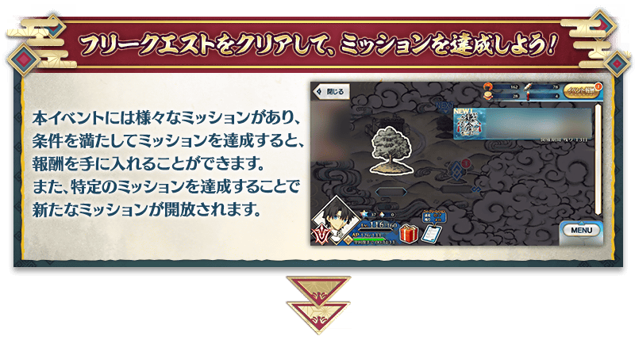
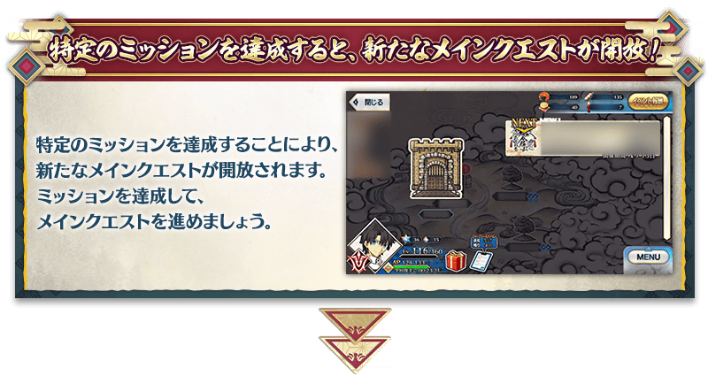
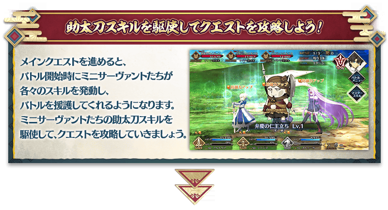
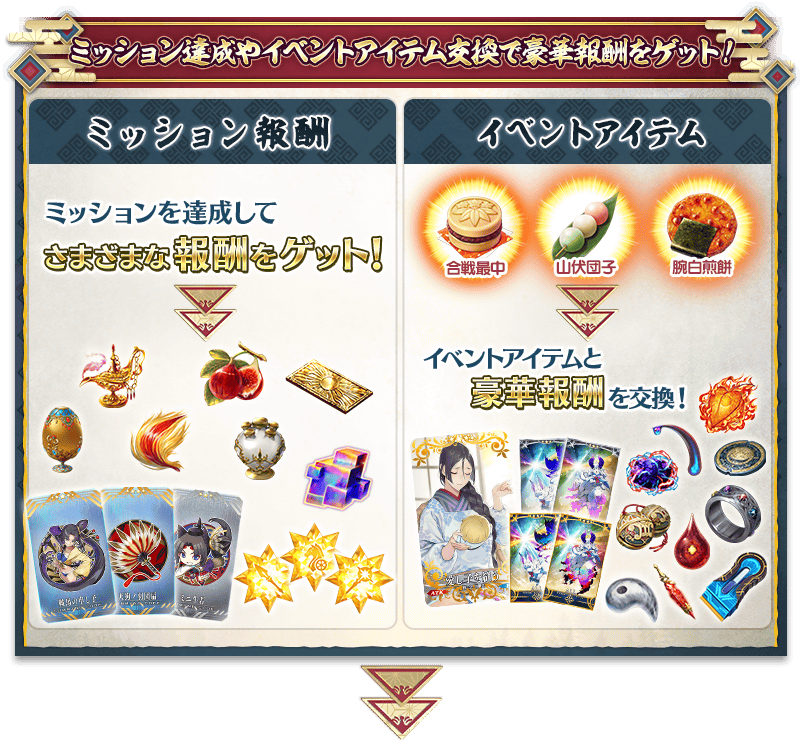
享受故事的主線關卡會以下表的行程開放
推進主線關卡的話，會開放可收集活動道具的自由關卡。
之後的自由關卡，是靠通過主線關卡和自由關卡來開放。
【關卡的舉辦期間】
| 關卡的種類 | 舉辦期間 |
|---|---|
| 主線關卡第一節 主線關卡第二節 自由關卡 |
2021年1月20日(三) 17:00～ 2月3日(三) 11:59 |
| 主線關卡第三節 自由關卡 |
2021年1月21日(四) 17:00～ 2月3日(三) 11:59 |
| 主線關卡第四節 自由關卡 |
2021年1月22日(五) 17:00～ 2月3日(三) 11:59 |
| 主線關卡第五節 自由關卡 |
2021年1月23日(六) 17:00～ 2月3日(三) 11:59 |
| 主線關卡第六節 自由關卡 |
2021年1月24日(日) 17:00～ 2月3日(三) 11:59 |
| 主線關卡第七節 主線關卡第八節 自由關卡 |
鬼一法眼正式加入
2021年1月25日(一) 17:00～
2月3日(三) 11:59 |
※請注意「鬼一法眼【寶具強化用】」要2021年1月27日(三) 17:00以後才能入手。
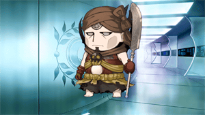
本活動中推進故事的話，迷你從者們會登場。
迷你從者們在戰鬥開始時會使用助太刀技能來支援隊伍。
※請注意在一部份的主線關卡中，助太刀技能不會發動。
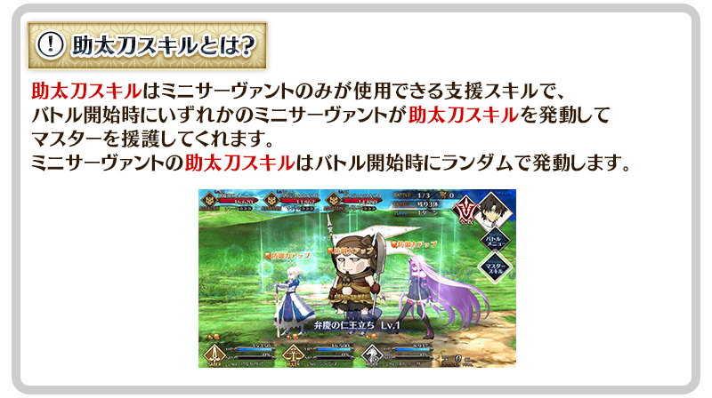
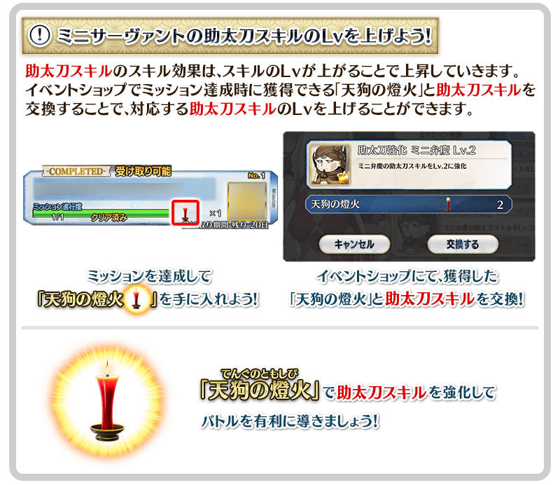
期間限定活動「來向鎌倉道別吧 ～Little Big Tengu～」中會發生達成「收集特定的道具一定數以上」「擊倒特定的敵人」等各式各樣條件的話，可獲得豪華報酬的任務！
另外，對應任務的達成狀況會開放新的任務等。
通過任務，邊獲得達成報酬邊推進主線關卡吧！
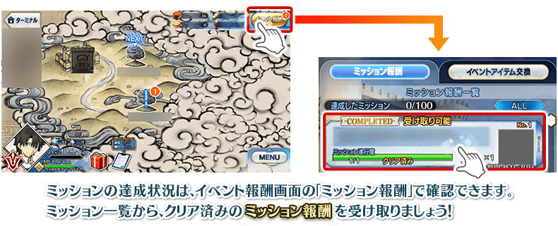
※請注意光滿足通過條件無法入手報酬。 ※請注意未領取任務報酬的話，不會開放新的任務。
【1月27日(三) 17:00追記】
以通過期間限定活動「來向鎌倉道別吧 ～Little Big Tengu～」的所有任務及「終局特異點」的御主做為對象，開放高難易度的「挑戰關卡」。
「挑戰關卡」就算通過後也不會消失，可以變更從者和概念禮裝的組合等後無限次挑戰。
※請注意在挑戰關卡中，不會發動助太刀技能。 ※關卡通過報酬、戰利品、御主EXP、魔術禮裝EXP、絆點數只可在初次通過時獲得。
◆挑戰關卡開放時間◆
2021年1月27日(三) 17:00～
◆挑戰關卡參加條件◆
滿足以下條件的御主才能參加
・通過期間限定活動「來向鎌倉道別吧 ～Little Big Tengu～」的所有任務
・通過「終局特異點」
◆挑戰關卡初次通過報酬◆
傳承結晶 1個
超值攻略方法・其1
本活動的期間中，強化「★4(SR)鬼一法眼」時的獲得經驗值變成2倍。
是讓活動加成對象「★4(SR)鬼一法眼」等級一口氣上升的機會！
◆舉辦期間◆
2021年1月20日(三) 17:00～2月3日(三) 11:59
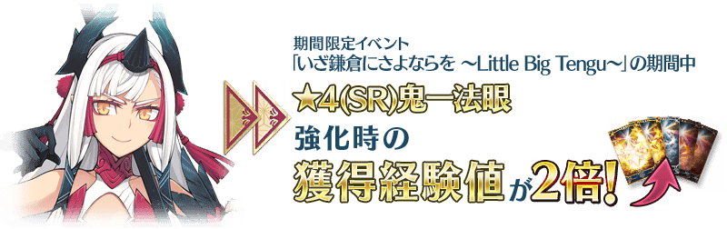
超值攻略方法・其2
本活動的期間中，下表的從者在活動關卡中會得到「自身的攻擊威力提升」與「絆點數獲得量提升」的加成！
強化對象從者，挑戰活動吧！
※活動加成的效果量因從者而異。
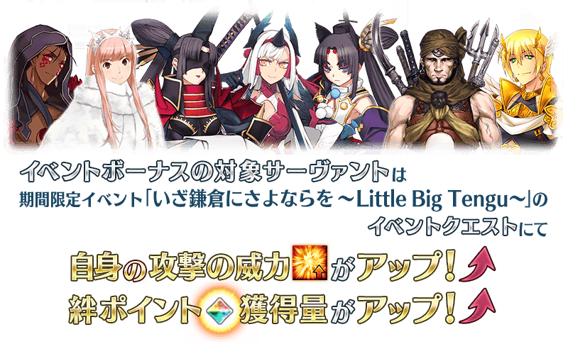
【活動加成的效果與對象從者】
| 自身的 攻擊威力 |
絆點數 獲得量 |
職階 | 稀有度 | 從者名 |
|---|---|---|---|---|
| ＋100% | 只限自身 ＋50% |
Assassin | ★★★★ | 鬼一法眼 |
| Avenger | ★★★★★ | 平景清 | ||
| ＋50% | 只限自身 ＋20% |
Saber | ★ | 伊阿宋 |
| Lancer | ★★ | 武藏坊弁慶 | ||
| Rider | ★★★★★ | 女王梅芙 | ||
| ★★★ | 牛若丸 | |||
| Berserker | ★★★★★ | 庫・夫林〔Alter〕 | ||
| ＋30% | 只限自身 ＋20% |
Saber | ★★★★★ | 狄奧斯庫洛伊 |
| ★★★★ | 伊莉莎白・巴托里〔Brave〕 | |||
| ★★★ | 蓋烏斯・尤利烏斯・凱撒 | |||
| ★★★ | 弗格斯・馬克・羅伊 | |||
| Archer | ★ | 織田信勝 | ||
| Lancer | ★★★★★ | 斯卡哈 | ||
| ★★★★ | 伊莉莎白・巴托里 | |||
| ★★★★ | 貞德・Alter・聖誕・Lily | |||
| ★★★★ | 美杜莎 | |||
| Rider | ★★★★★ | 伊斯坎達爾 | ||
| ★★★ | 亞歷山大 | |||
| Caster | ★★★★★ | 伊莉雅絲菲爾・馮・愛因茲貝倫 | ||
| ★★★★★ | 諸葛孔明〔艾梅洛Ⅱ世〕 | |||
| ★★★★★ | 紫式部 | |||
| ★★★★ | 愛麗絲菲爾〔天之衣〕 | |||
| ★★★★ | 伊莉莎白・巴托里〔萬聖節〕 | |||
| ★★★★ | 美狄亞〔Lily〕 | |||
| ★★★ | 美狄亞 | |||
| Assassin | ★★★★ | 格蕾 | ||
| Berserker | ★★★★ | 貞德〔Alter〕 | ||
| Avenger | ★★★★★ | 貞德〔Alter〕 | ||
| ★★★★★ | 魔王信長(織田信長) | |||
| ★★★★ | 戈爾貢 | |||
| Alterego | ★★★★★ | 志度內 |
※就算成為對象從者也會有未在本活動的主線劇本登場的情況。
※自1月17日(日) 17:30，在從者選擇畫面和從者強化畫面等，追加活動加成篩選器。
由於是只顯示於活動活躍從者的便利功能，敬請活用。
※「★5(SSR)魔王信長(織田信長)」是「★5(SSR)織田信長」靈基再臨到第3階段的話名稱會變成「★5(SSR)魔王信長」。
超值攻略方法・其3
裝備活動限定概念禮裝與期間限定概念禮裝的話，在活動中會受到各式各樣的恩惠。
裝備可靠活動道具交換入手的活動限定概念禮裝「★5(SSR)愛し子を縫う」的話，在期間限定活動「來向鎌倉道別吧 ～Little Big Tengu～」的活動關卡中(勇士)敵人的追加出現率會提升20%。
※請注意就算於各關卡的(勇士)敵人出現率顯示100％以上的情況，實際的出現率仍是100％。
另外，裝備在聖晶石召喚Pick Up的期間限定概念禮裝「★5(SSR)一寸姫」「★4(SR)禅の箱庭」「★3(R)腰を掛け」的話，活動道具「合戰最中」「山伏糰子」「腕白煎餅」各自的掉落獲得數會提升。
※請注意各關卡的道具掉落率並非100％。
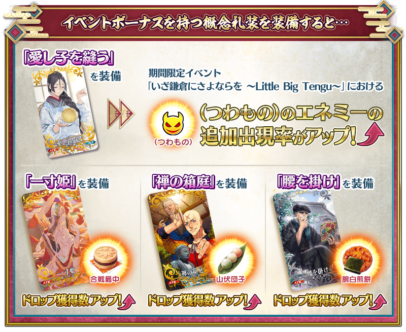
| 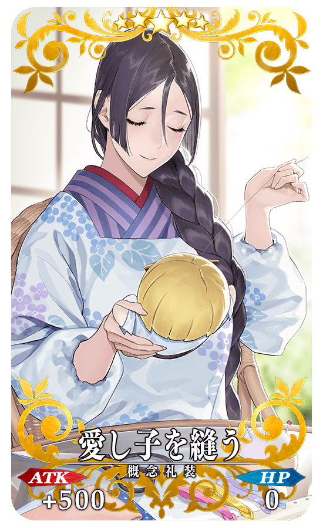 |
★★★★★SSR
|
| 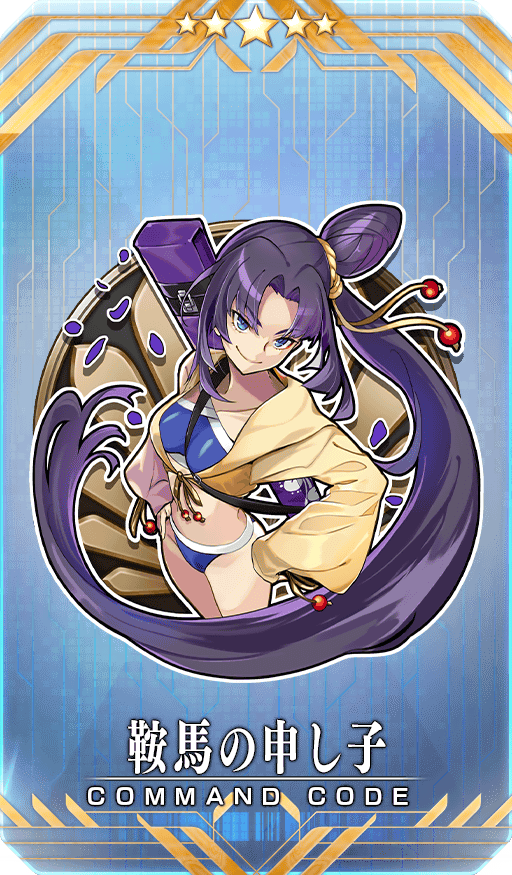 |
【活動限定】 |
| 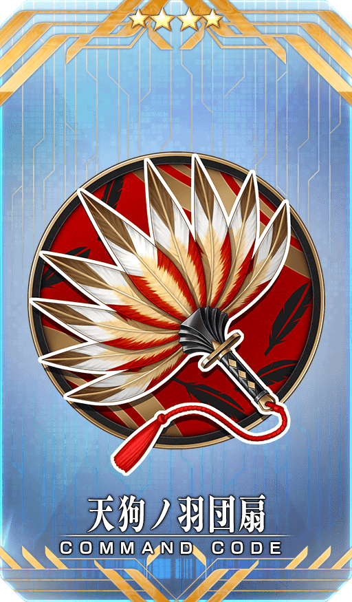 |
★★★★SR |
| 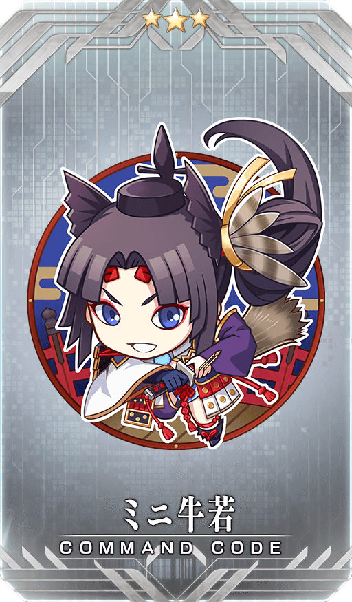 |
★★★R |
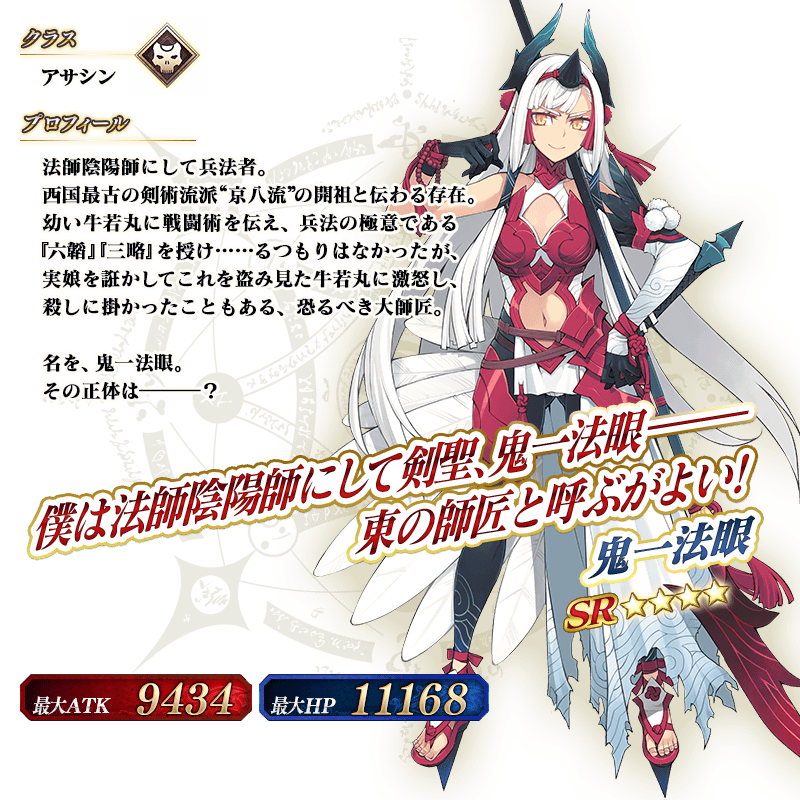
◆靈基再臨◆
使用能靠活動任務入手的「大天狗の面」，重複4次靈基再臨的話，卡面會有所變化！
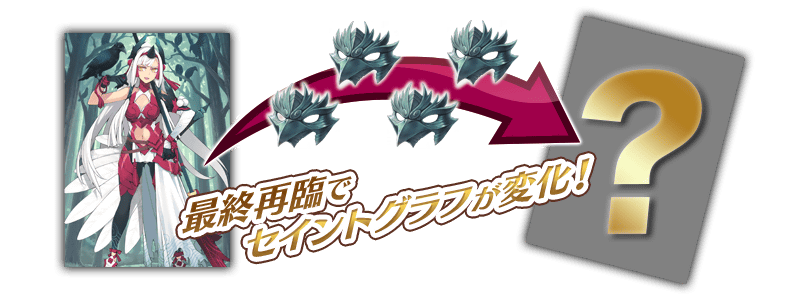
※「★4(SR)鬼一法眼」不會隨靈基再臨使戰鬥角色的外觀變化。
介紹「★4(SR)鬼一法眼」的寶具演出！
「★4(SR)鬼一法眼」的寶具演出於一部份裝置有對應全螢幕顯示。
在「Fate/Grand Order」官方網站內的公告中，以影片公開寶具演出，敬請確認。

活動道具可自點擊管理室(ターミナル)畫面右上「活動報酬」的「活動道具交換」畫面，交換以下的道具。
※關於英靈結晶・流星之芙芙ALL★4(HP)、英靈結晶・日輪之芙芙ALL★4(ATK)的交換，會在進行1月25日(一)開放的活動關卡後才能交換。 ※活動道具交換期間結束後「合戰最中」「山伏糰子」「腕白煎餅」「天狗的燈火」會消失。 ※「天狗的燈火」在活動期間結束後可交換成QP。
◆交換期間◆
2021年1月20日(三) 17:00～2月10日(三) 11:59
◆能用合戰最中(かっせんもなか)交換的道具◆
|
【活動限定概念禮裝】 【技能強化＆靈基再臨素材】 【靈基再臨素材】 【其他道具】 |
◆能用山伏糰子(やまぶしだんご)交換的道具◆
|
【活動限定概念禮裝】 【技能強化＆靈基再臨素材】 【靈基再臨素材】 【其他道具】 |
◆能用腕白煎餅(わんぱくせんべい)交換的道具◆
|
【活動限定概念禮裝】 【技能強化＆靈基再臨素材】 【其他道具】 |

在2017年舉辦的期間限定活動「Death Jail・夏日逃脫 ～罪與絶望的梅芙大監獄2017～ 」及在2018年舉辦的期間限定活動「復刻:Death Jail・夏日逃脫 ～罪與絶望的梅芙大監獄2017～ 輕量版」中登場的「★5(SSR)女王梅芙(Rider)」靈衣「魅惑的典獄長服飾(魅惑の獄長ルック)」開放權在達文西工房的「稀有稜鏡交換」追加！
可用稀有稜鏡5個交換上述靈衣開放權入手。
另外，想開放靈衣的話，除了靈衣開放權外再加上必須滿足一些開放條件。
◆追加時間◆
2021年1月20日(三) 17:00～
◆交換條件◆
滿足以下條件的御主才能交換
・通過「特異點F 炎上汙染都市 冬木」
・未入手靈衣「魅惑的典獄長服飾」開放權
※在「稀有稜鏡交換」追加的靈衣「魅惑的典獄長服飾」開放權為永久，沒有交換期限。 ※關於已獲得交換對象靈衣開放權的玩家，無法交換。
◆有關靈衣開放權的注意◆
※本次追加的「★5(SSR)女王梅芙(Rider)」靈衣會配合外觀變化一部份語音。
※請注意未持有「★5(SSR)女王梅芙(Rider)」的情況，可入手靈衣開放權。但無法進行靈衣開放。
◆追加道具(永久)◆
| 追加道具 | 能交換次數 | 1次交換所需的 稀有稜鏡數 |
|---|---|---|
| 靈衣「魅惑的典獄長服飾」開放權 | 1次 | 5個 |


「靈衣開放」是自強化畫面進行。
※「靈衣開放」後會自動切換戰鬥角色和圖示。若想回到「靈衣開放」前的狀態和變成其他再臨階段的情況，可自從者詳細畫面變更。 ※進行「靈衣開放」不會讓職階和能力等有所變化。

介紹開放靈衣「魅惑的典獄長服飾」的「★5(SSR)女王梅芙(Rider)」寶具演出！
在「Fate/Grand Order」官方網站內的公告中，以影片公開寶具演出，敬請確認。
【1月20日(三) 17:00追記】
「★3(R)牛若丸(Rider)」「★2(UC)武藏坊弁慶」的戰鬥動作及寶具演出翻新！
另外，伴隨對一部份裝置全螢幕顯示的對應，2位的寶具演出寶具演出也對應到全螢幕顯示。
在「Fate/Grand Order」官方網站內的公告中，以影片公開寶具演出，敬請確認。
◆翻新實施時間◆
2021年1月20日(三) 17:00～
【★3(R)牛若丸(Rider)】

【★2(UC)武藏坊弁慶】
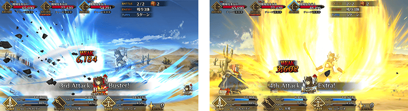
【1月20日(三) 17:00追記】
強化「★3(R)牛若丸(Rider)」「★2(UC)武藏坊弁慶」的特別關卡「從者強化關卡」，在迦勒底之門永久追加。
不僅進行對象從者的強化，也可獲得聖晶石做為關卡通過報酬。
※請注意在從者強化關卡沒有文字冒險部份。
◆追加時間◆
2021年1月20日(三) 17:00～
◆開放條件◆
持有的強化對象從者，必須使其最終再臨。
※未持有對象從者的話，不會出現關卡。
※關卡沒有舉辦期限。


在2021年1月20日(三)維修後反映的更新內容之中，介紹代表性的內容。
◆追加時間◆
2021年1月20日(三) 17:00～
任務通知看板表示「EVENT MISSION」的文字色變更
任務通知看板的「MASTER MISSION DAILY」與「EVENT MISSION」中，為了提高辨識度，「EVENT MISSION」的文字色從「綠色」變更成「紫色」。
另外，關卡看板的關卡情報中在敵人顯示的「Event target」文字色也配合從「綠色」變更成「紫色」。
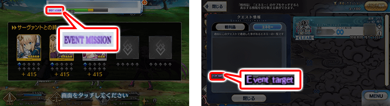
從者的寶具與技能的說明文更簡單閱讀修改
從者詳細畫面中，寶具和技能效果的説明文太長的情況，字體大小太小難以閱讀的狀態，修改成調整顯示領域，變成更容易閱讀文字。
一部份地方除外，戰鬥中和從者技能強化畫面等，也對應其他可確認寶具和技能效果的畫面。

其他還有，期間限定「來向鎌倉道別吧Pick Up召喚(每日交替)」同時舉辦！
關於詳情，請自下述橫幅確認。
■「來向鎌倉道別吧Pick Up召喚(每日交替)」詳細情報